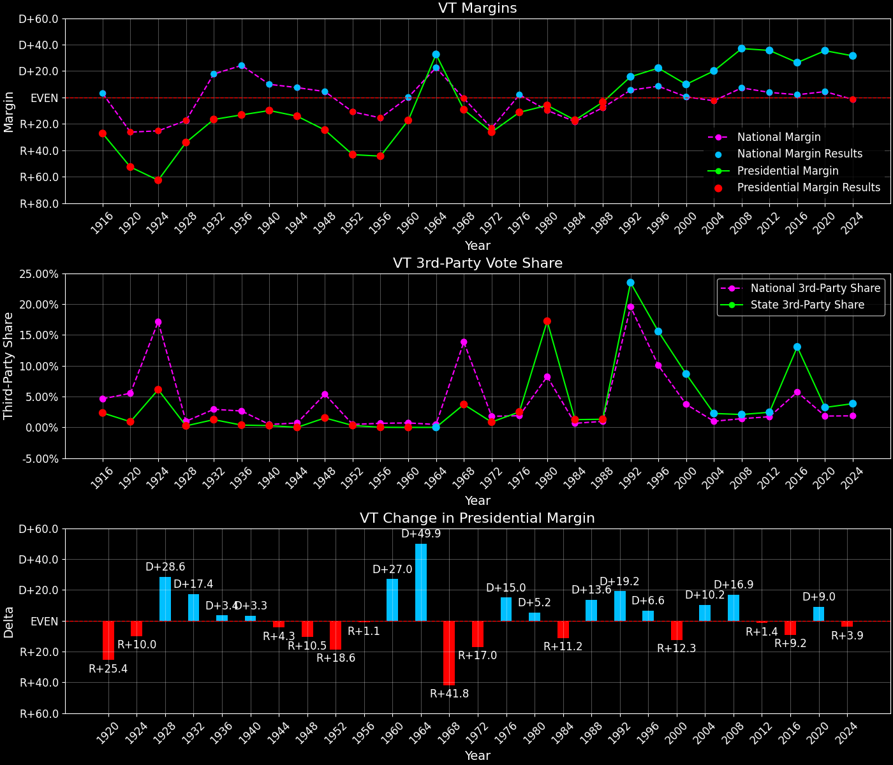
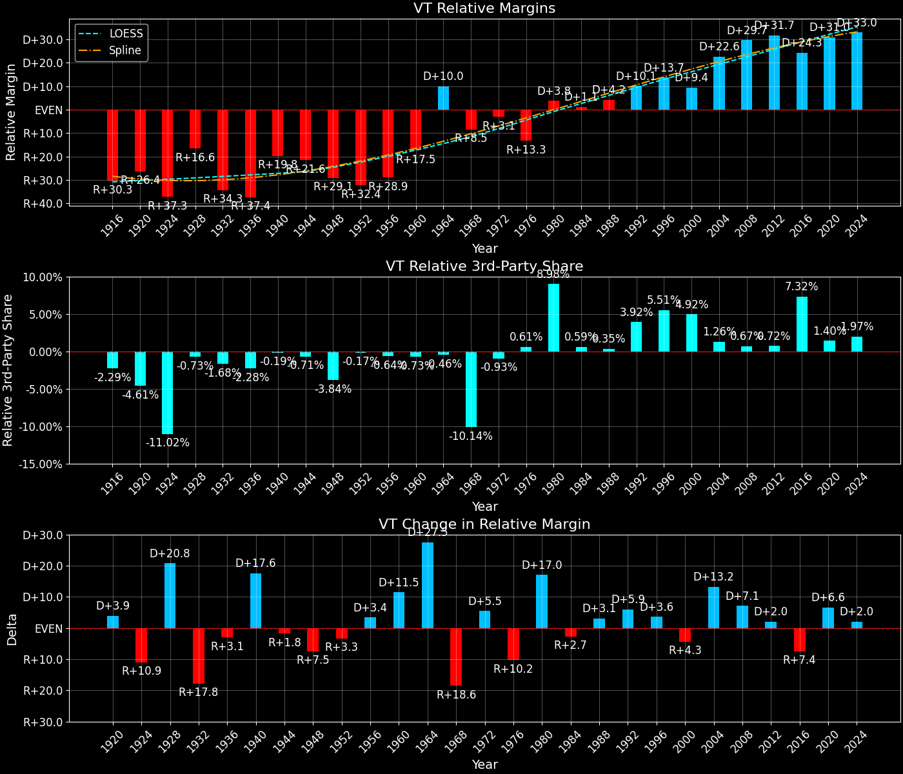
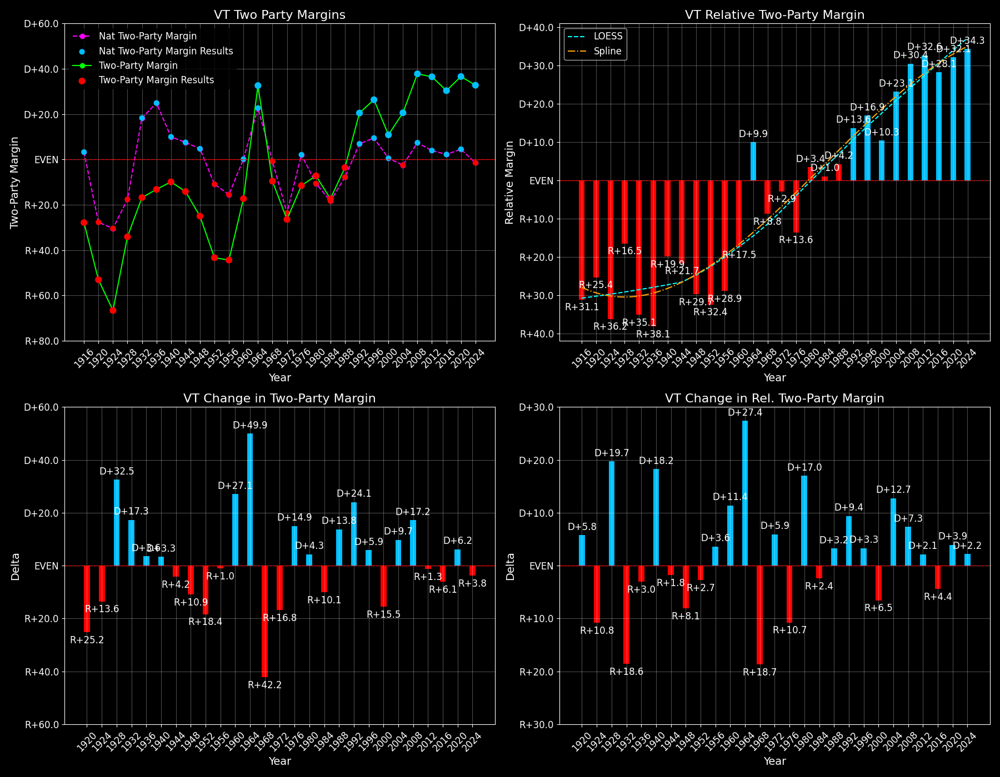

← Back to Map

Margins · 3rd-Party share · Pres. deltas

Relative margins · Relative 3rd-Party · Rel. deltas
Vermont (VT) — Total Data
| Year | EVs | D | R | State Margin | Nat. Margin | Rel. Margin | Total votes |
|---|
| 1968 | 3 | 70,255(43.5%) | 85,142(52.8%) | R+9.2 | R+0.7 | R+8.5 | 161,404 |
| 1972 | 3 | 68,174(36.5%) | 117,149(62.7%) | R+26.2(Δ R+17.0) | R+23.1(Δ R+22.4) | R+3.1(Δ D+5.5) | 186,947 |
| 1976 | 3 | 81,044(43.1%) | 102,085(54.3%) | R+11.2(Δ D+15.0) | D+2.1(Δ D+25.2) | R+13.3(Δ R+10.2) | 187,855 |
| 1980 | 3 | 81,891(38.4%) | 94,598(44.4%) | R+6.0(Δ D+5.2) | R+9.7(Δ R+11.8) | D+3.8(Δ D+17.0) | 213,207 |
| 1984 | 3 | 95,730(40.8%) | 135,865(57.9%) | R+17.1(Δ R+11.2) | R+18.2(Δ R+8.5) | D+1.1(Δ R+2.7) | 234,561 |
| 1988 | 3 | 115,775(47.6%) | 124,331(51.1%) | R+3.5(Δ D+13.6) | R+7.7(Δ D+10.5) | D+4.2(Δ D+3.1) | 243,333 |
| 1992 | 3 | 133,592(46.1%) | 88,122(30.4%) | D+15.7(Δ D+19.2) | D+5.6(Δ D+13.3) | D+10.1(Δ D+5.9) | 289,701 |
| 1996 | 3 | 137,894(53.4%) | 80,352(31.1%) | D+22.3(Δ D+6.6) | D+8.5(Δ D+3.0) | D+13.7(Δ D+3.6) | 258,449 |
| 2000 | 3 | 149,022(50.6%) | 119,775(40.7%) | D+9.9(Δ R+12.3) | D+0.5(Δ R+8.0) | D+9.4(Δ R+4.3) | 294,308 |
| 2004 | 3 | 184,067(58.9%) | 121,180(38.8%) | D+20.1(Δ D+10.2) | R+2.5(Δ R+3.0) | D+22.6(Δ D+13.2) | 312,309 |
| 2008 | 3 | 219,262(67.5%) | 98,974(30.4%) | D+37.0(Δ D+16.9) | D+7.3(Δ D+9.7) | D+29.7(Δ D+7.1) | 325,046 |
| 2012 | 3 | 199,239(66.6%) | 92,698(31.0%) | D+35.6(Δ R+1.4) | D+3.9(Δ R+3.4) | D+31.7(Δ D+2.0) | 299,290 |
| 2016 | 3 | 178,573(56.7%) | 95,369(30.3%) | D+26.4(Δ R+9.2) | D+2.1(Δ R+1.8) | D+24.3(Δ R+7.4) | 315,067 |
| 2020 | 3 | 242,820(66.1%) | 112,704(30.7%) | D+35.4(Δ D+9.0) | D+4.5(Δ D+2.4) | D+31.0(Δ D+6.6) | 367,428 |
| 2024 | 3 | 235,791(63.8%) | 119,395(32.3%) | D+31.5(Δ R+3.9) | R+1.5(Δ R+5.9) | D+33.0(Δ D+2.0) | 369,422 |
Column explanations
- Δ
- Change (delta) in the value from the previous election year.
- Year
- Election year.
- EVs
- Number of electoral votes allocated to this state or unit.
- D
- Number of votes for the Democratic candidate (raw count(pct%)).
- R
- Number of votes for the Republican candidate (raw count(pct%)).
- State Margin
- Margin between the two major-party candidates, including third-party votes ((D - R)/total).
- Nat. Margin
- The national presidential margin for that year, including third-party votes ((D_total - R_total)/total_votes).
- Rel. Margin
- The presidential margin relative to the national presidential margin (Margin - Nat. Margin).
- Total votes
- Total voter turnout or ballots cast (when provided).
Vermont (VT) — Third-Party Data
| Year | D | R | Other votes | State 3rd-Party Share | 3rd-Party Nat. Share | 3rd-Party Rel. Share |
|---|
| 1968 | 70,255(43.5%) | 85,142(52.8%) | 6,007(3.7%) | 3.72% | 13.86% | -10.14% |
| 1972 | 68,174(36.5%) | 117,149(62.7%) | 1,624(0.9%) | 0.87% | 1.80% | -0.93% |
| 1976 | 81,044(43.1%) | 102,085(54.3%) | 4,726(2.5%) | 2.52% | 1.90% | 0.61% |
| 1980 | 81,891(38.4%) | 94,598(44.4%) | 36,718(17.2%) | 17.22% | 8.24% | 8.98% |
| 1984 | 95,730(40.8%) | 135,865(57.9%) | 2,966(1.3%) | 1.26% | 0.67% | 0.59% |
| 1988 | 115,775(47.6%) | 124,331(51.1%) | 3,227(1.3%) | 1.33% | 0.98% | 0.35% |
| 1992 | 133,592(46.1%) | 88,122(30.4%) | 67,987(23.5%) | 23.47% | 19.55% | 3.92% |
| 1996 | 137,894(53.4%) | 80,352(31.1%) | 40,203(15.6%) | 15.56% | 10.05% | 5.51% |
| 2000 | 149,022(50.6%) | 119,775(40.7%) | 25,511(8.7%) | 8.67% | 3.75% | 4.92% |
| 2004 | 184,067(58.9%) | 121,180(38.8%) | 7,062(2.3%) | 2.26% | 1.00% | 1.26% |
| 2008 | 219,262(67.5%) | 98,974(30.4%) | 6,810(2.1%) | 2.10% | 1.42% | 0.67% |
| 2012 | 199,239(66.6%) | 92,698(31.0%) | 7,353(2.5%) | 2.46% | 1.73% | 0.72% |
| 2016 | 178,573(56.7%) | 95,369(30.3%) | 41,125(13.1%) | 13.05% | 5.73% | 7.32% |
| 2020 | 242,820(66.1%) | 112,704(30.7%) | 11,904(3.2%) | 3.24% | 1.84% | 1.40% |
| 2024 | 235,791(63.8%) | 119,395(32.3%) | 14,236(3.9%) | 3.85% | 1.88% | 1.97% |
Column explanations
- Year
- Election year.
- D
- Number of votes for the Democratic candidate (raw count(pct%)).
- R
- Number of votes for the Republican candidate (raw count(pct%)).
- Other votes
- Number of votes for third-party (other) candidates (raw count(pct%)).
- State 3rd-Party Share
- Share of the vote received by third-party (other) candidates.
- 3rd-Party Nat. Share
- The national third-party share for that year (3rd-Party votes / total votes).
- 3rd-Party Rel. Share
- Third-party share relative to the national third-party share (3rd-Party share - Nat. 3rd-Party share).

Two-party margins · relative · deltas
Vermont (VT) — Two-Party Data
| Year | EVs | D | R | 2-Party Margin | 2-Party Nat. Margin | 2-Party Rel. Margin |
|---|
| 1968 | 3 | 70,255(45.2%) | 85,142(54.8%) | R+9.6 | R+0.8 | R+8.8 |
| 1972 | 3 | 68,174(36.8%) | 117,149(63.2%) | R+26.4(Δ R+16.8) | R+23.6(Δ R+22.8) | R+2.9(Δ D+5.9) |
| 1976 | 3 | 81,044(44.3%) | 102,085(55.7%) | R+11.5(Δ D+14.9) | D+2.1(Δ D+25.7) | R+13.6(Δ R+10.7) |
| 1980 | 3 | 81,891(46.4%) | 94,598(53.6%) | R+7.2(Δ D+4.3) | R+10.6(Δ R+12.7) | D+3.4(Δ D+17.0) |
| 1984 | 3 | 95,730(41.3%) | 135,865(58.7%) | R+17.3(Δ R+10.1) | R+18.3(Δ R+7.7) | D+1.0(Δ R+2.4) |
| 1988 | 3 | 115,775(48.2%) | 124,331(51.8%) | R+3.6(Δ D+13.8) | R+7.8(Δ D+10.5) | D+4.2(Δ D+3.2) |
| 1992 | 3 | 133,592(60.3%) | 88,122(39.7%) | D+20.5(Δ D+24.1) | D+6.9(Δ D+14.7) | D+13.6(Δ D+9.4) |
| 1996 | 3 | 137,894(63.2%) | 80,352(36.8%) | D+26.4(Δ D+5.9) | D+9.5(Δ D+2.6) | D+16.9(Δ D+3.3) |
| 2000 | 3 | 149,022(55.4%) | 119,775(44.6%) | D+10.9(Δ R+15.5) | D+0.5(Δ R+8.9) | D+10.3(Δ R+6.5) |
| 2004 | 3 | 184,067(60.3%) | 121,180(39.7%) | D+20.6(Δ D+9.7) | R+2.5(Δ R+3.0) | D+23.1(Δ D+12.7) |
| 2008 | 3 | 219,262(68.9%) | 98,974(31.1%) | D+37.8(Δ D+17.2) | D+7.4(Δ D+9.9) | D+30.4(Δ D+7.3) |
| 2012 | 3 | 199,239(68.2%) | 92,698(31.8%) | D+36.5(Δ R+1.3) | D+3.9(Δ R+3.4) | D+32.6(Δ D+2.1) |
| 2016 | 3 | 178,573(65.2%) | 95,369(34.8%) | D+30.4(Δ R+6.1) | D+2.2(Δ R+1.7) | D+28.1(Δ R+4.4) |
| 2020 | 3 | 242,820(68.3%) | 112,704(31.7%) | D+36.6(Δ D+6.2) | D+4.5(Δ D+2.3) | D+32.1(Δ D+3.9) |
| 2024 | 3 | 235,791(66.4%) | 119,395(33.6%) | D+32.8(Δ R+3.8) | R+1.5(Δ R+6.0) | D+34.3(Δ D+2.2) |
Column explanations
- Δ
- Change (delta) in the value from the previous election year.
- Year
- Election year.
- EVs
- Number of electoral votes allocated to this state or unit.
- D
- Number of votes for the Democratic candidate (raw count(pct%)).
- R
- Number of votes for the Republican candidate (raw count(pct%)).
- 2-Party Margin
- Margin between the two major-party candidates, ignoring third-party votes ((D - R)/(D + R)).
- 2-Party Nat. Margin
- The national presidential margin for that year, including third-party votes ((D_total - R_total)/total_votes).
- 2-Party Rel. Margin
- The presidential margin relative to the national presidential margin (Margin - Nat. Margin).